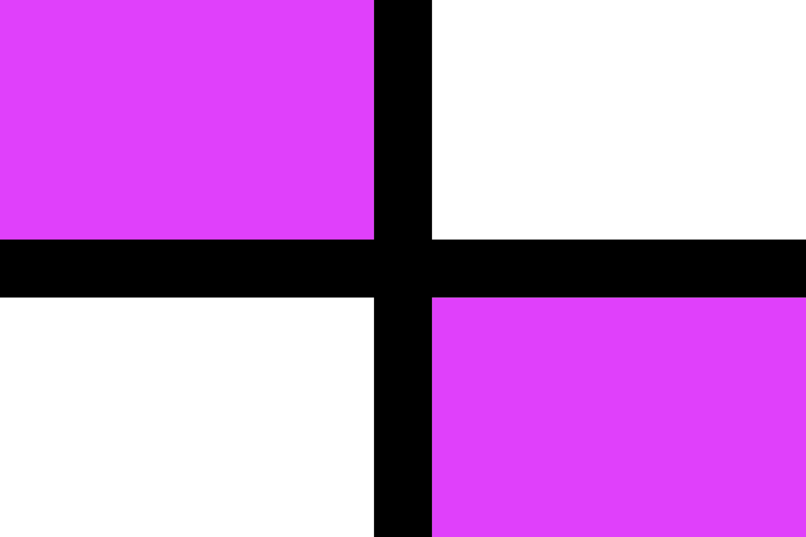

Мишарская Ассоциация
- Идентичность не должна исчезать.
- Культура может быть современной.
- Язык — часть живого мышления.
- Сообщество важнее изоляции.
- Традиция должна развиваться, а не консервироваться.
Неомишаризм — это идеологическая концепция нашей Ассоциации. В современном мире мы сталкиваемся с угрозой размывания. Мы против того, чтобы живая культура сводилась исключительно к фольклору и поверхностным стереотипам. Такой подход превращает нацию в музейный экспонат.
Мы выбираем не пассивную ассимиляцию, а активное объединение. Наша цель — сплотить сообщество вокруг идеи практической взаимовыручки, опираясь на историческое наследие, чтобы быть сильными и конкурентоспособными.
Наш исторический характер сформировался в правобережье Волги (Мещере). Многовековой статус военно-служилого сословия выработал в мишарях высокий уровень самоорганизации, мобильности и сплочённости.

| Критерий | Историческая характеристика |
|---|---|
| Организация | Объединение по служилым городам (Касимов, Темников, Кадом). |
| Экономика | Индивидуальное вотчинное и поместное землевладение. |
| Самообеспечение | Полная самостоятельность: покупка вооружения и коней за свой счёт. |
| Военное дело | Охрана границ, основание крепостей и формирование войск. |
Западный (мишарский) диалект — это самодостаточная лингвистическая система. Особенности нашего говора — это не искажение, а естественный процесс развития языка, который формирует наш культурный код.
| Уровень | Специфика явления | Пример |
|---|---|---|
| Цоканье | Переход звука [ч] в [ц] | пыцак вместо пычак |
| Йоканье | Звук [й] на месте [җ] | йәй вместо җәй |
| Вокализм | Неогубленный звук [а] | Чёткое и ясное произношение |
| Морфология | Особая форма выражения намерения | баргым кели вместо барасым килә |
Ассоциация находится на стадии формирования. В скором времени здесь появятся ресурсы для общения, координации и развития сообщества:
- 📢 Telegram-канал (В разработке) — главные новости и статьи.
- 💬 Telegram-чат (В разработке) — площадка для знакомства и взаимовыручки.
- 📱 TikTok / YouTube (В разработке) — современный видеоконтент.